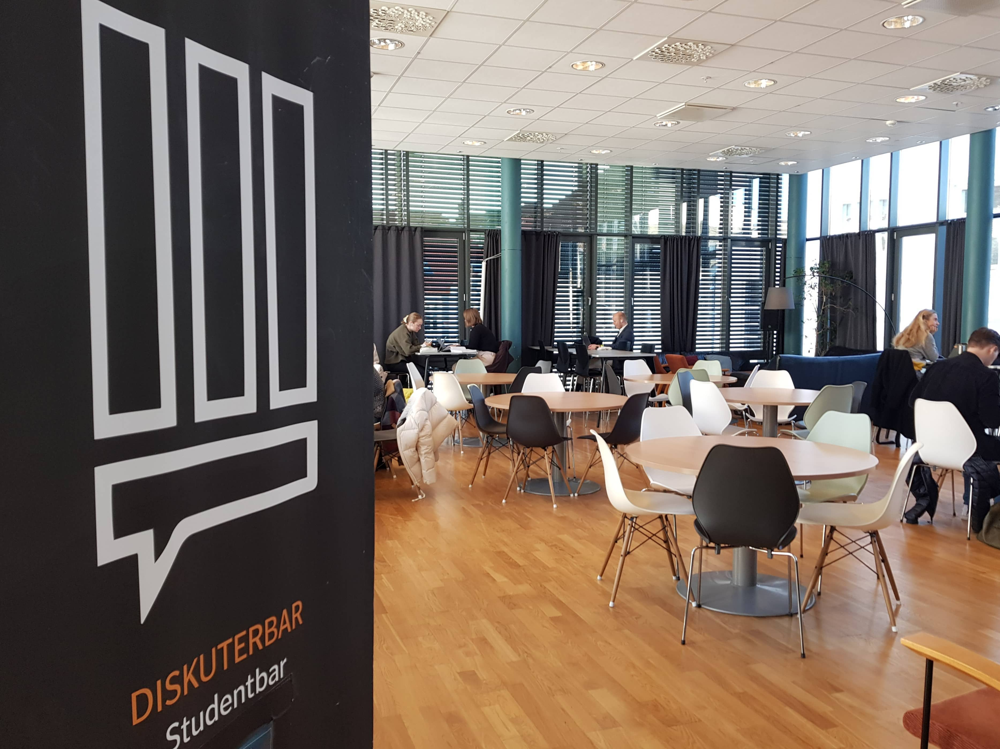
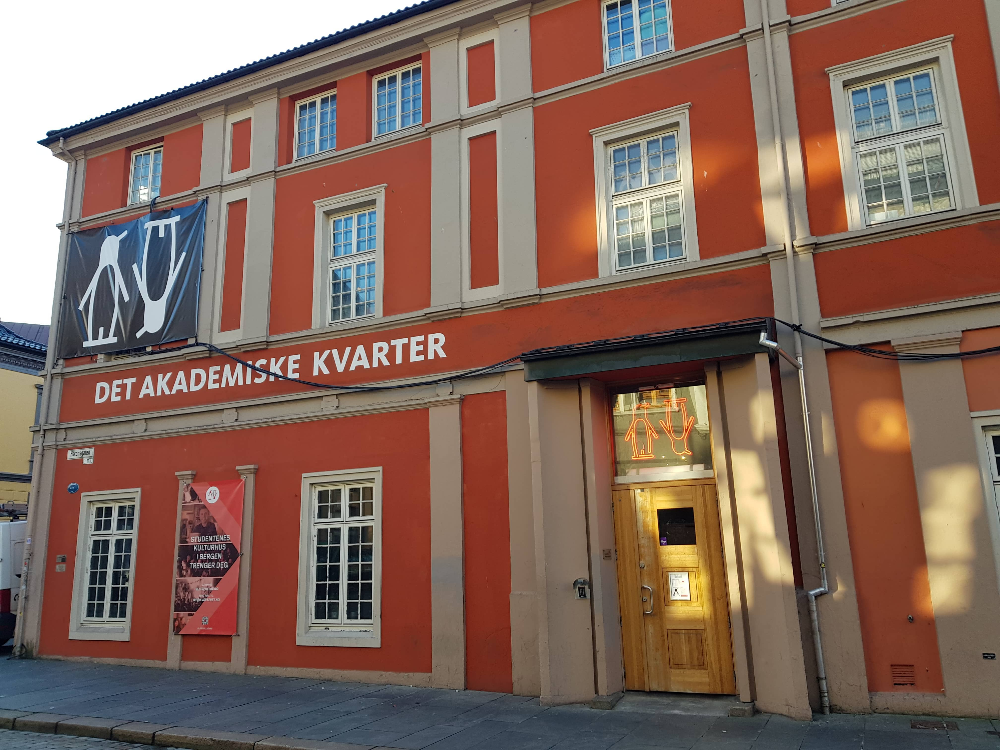
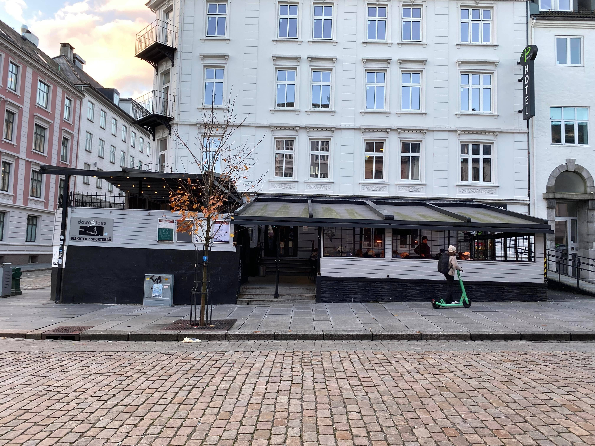

Bars
When studying, some students like to go out partying or drinking.
So even people with not so much money should be able to go out and
enjoy the late-night life in Bergen without having to avoid it
because of continous lack of money. Therefor we have prepared
a few example of cheap bars that offer good beverages with a
good price-range in mind.
Recommendations
Diskuterbar

-
Description:
Diskuterbar is a bar that was made for students
belonging mainly to the Social Science faculty of the
University of Bergen, but everyone has access to come
here and enjoy a beer, or a glass of vine. Their
location is only temporary at the moment. Diskuterbar
is also used alot for studying outside, and inside of
hours.
-
Price range:
- Alcohlic Drinks: 19 - 140 NOK
- Non-alcholic Drinks: 0 - 29 NOK
- Food: 10 - 25 NOK
- Snacks: 25 NOK
- Warm Drinks: 10 NOK
-
Entry Fee:
Free
-
Location:
Christies gate 18, 5007 Bergen, Norway
-
Opening hours:
- Monday to Wednesday: 1pm-4:30pm
- Thursday to Friday: 1pm-10:30pm
- Saturday and Sunday: closed
-
Phone number:
they don't have one.
-
Website:
Diskuterbar
Det Akademiske Kvarter / The academic quarter

-
Description:
Det Akademiske Kvarter/The Academic Quarter is a
bar/club that mainly belong to the University of Bergen.
They have a regular bar for everyone over 18,
including a bar for people over the age of 20. The
Academic quarter also has a general club room which
also includes silent disco.
-
Price range:
- Food: 30 - 38 NOK
- Coffee/Tea: 10 - 43 NOK
- Non-Alcoholic/Soda: 30 - 40 NOK
- Beer: 69 - 104 NOK
- Wine: 59 - 329 NOK
- Cider/Alcopops/Ginger: 74 - 99 NOK
- Mocktails(0%): 44 NOK
- Shots: 50 - 75 NOK
-
Entry Fee
Free
-
Location:
Olav Kyrres gate 49, 5015 Bergen, Norway
-
Opening hours:
- Monday to Friday: 11:30am-12:30am
- Saturday: 5pm-3am
- Sunday: closed
-
Phone number:
+47 55 58 99 10
-
Website:
Kvarteret
Fotballpuben / Football pub

-
Description:
The football pub is a bar that usually streams all
the different football games that are happening that
are relevant to the football scene in Norway. They
also include other activities like Karaoke. They
provide a vast array of drinks, from Beer, Cider, to
different spritis, but all under an alcohol percentage
of 21%, due to people over the age of 18 having access.
They usually have a entry fee off 100 NOK.
-
Price range:
- Alcoholic drinks: 49 - 345 NOK
- Non-alcohlic drinks: 54 - 59 NOK
- Coffee & Snacks: 29 - 39 NOK
-
Entry Fee
100 NOK (after 23:00)
-
Location:
Vestre Torggaten 9, 5015 Bergen, Norway
-
Opening hours:
- Monday to Saturday: 9am-3am
- Sunday: 12am-3am
-
Phone number:
+47 55 33 66 66
-
Website:
Fotballpuben